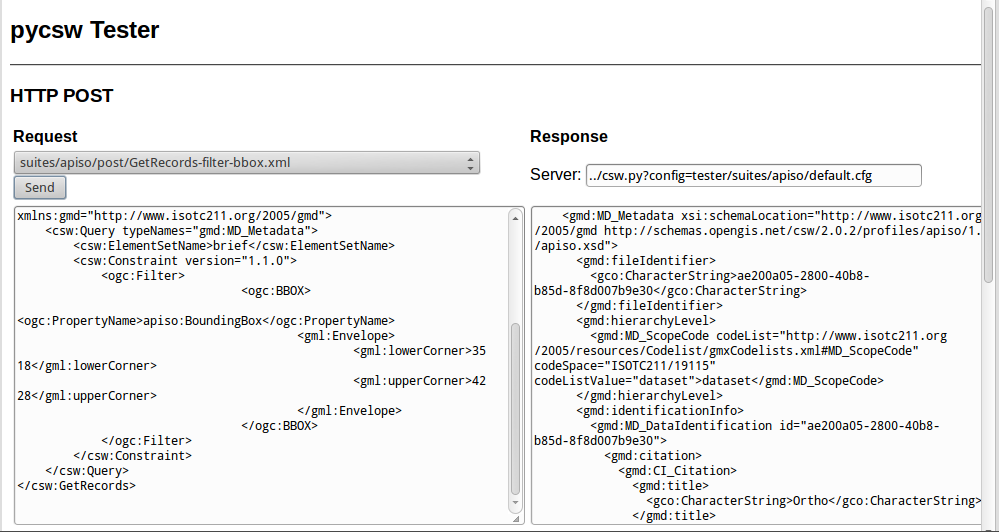

pycsw Quickstart¶
pycsw ist eine OGC CSW-Serverimplementierung, die in Python geschrieben wurde. pycsw ermöglicht die Veröffentlichung und das Durchsuchung von räumlichen Metadaten. Vorhandene Repositorys von räumlichen Metadaten können über OGC:CSW 2.0.2 oder OGC:CSW 3.0.0 verfügbar gemacht werden.
Contents
Nutzung der Test-Anwendung¶
Zum Aufruf der pycsw-Test-Anwendung gehen Sie über den Menüeintrag Web Services –> pycsw oder öffnen Sie die Seite
http://localhost/pycsw/tests/index.htmlmit Firefox:
Über die linke Auswahlbox stehen mehrere vordefinierte POST-Requests als XML zur Verfügung. Diese können an pycsw geschickt werden:
So erscheint beispielsweise durch die Auswahl von „apiso/DescribeRecord“ und durch Absenden über den „Send“-Button eine Beschreibung des ISO Application Profile Datensatzes im rechten Bereich:

Über die Auswahl von „GetCapabilities-SOAP“ und durch Absenden über den „Send“-Button wird ein SOAP-Request an den Server geschickt zur Veröffentlichung von deren Web Service Capabilities:

Der Anwender kann außerdem nach Datensätzen suchen. Dabei kann eine räumlicher Filter über eine Boundingbox definiert werden, indem „GetRecords-filter-bbox“ ausgewählt wird und die Koordinaten im XML-Request angepasst werden:

{kind=link}
Der Anwender kann die zahlreichen verfügbaren Anfragen ausprobieren.
Capabilities-Dokument und Konfiguration¶
Das Capabilities der pycsw-Installation findet sich unter http://localhost/pycsw?service=CSW&version=2.0.2&request=GetCapabilities. Wenn Sie lediglich http://localhost/pycsw aufrufen, erhalten Sie das Capabilities-Dokument für CSW 3.0.0, da dies die aktuellste unterstützte Version ist.
Um Web Service Metadaten zu bearbeiten, die Teil des Capabilities Dokuments sind, kann der Anwender die Datei /etc/pycsw/default.cfg unter dem Tag [metadata:main] bearbeiten.
Wenn der Anwender INSPIRE Discovery Service Unterstützung aktivieren möchte, müssen die Metadaten unter dem Tag [metadata:inspire] gefüllt werden und der enabled Eintrag muss auf true gesetzt werden.
Zur Information über die volle Funktionalität und Konfigurationsmöglichkeiten, schauen Sie bitte in die Documentation auf der pycsw-Webseite.
Erstellen von Metadaten¶
Metadaten-Dateien für einen räumlichen Datensatz oder einen räumlichen Web Service können über die Open Source Implementation der Inspire Directive for Metadata, European Open Source Metadata Editor (EUOSME) erzeugt werden. Die Anwendung ist erreichbar unter http://inspire-geoportal.ec.europa.eu/editor/. Der Quellcode findet sich unter: https://joinup.ec.europa.eu/svn/euosme/trunk
Sie können die obligatorischen Metadatenfelder ausfüllen, indem Sie die Registerkarten der Anwendung durchlaufen und Informationen wie den Namen des Datenbesitzers, Schlüsselwörter, Ressourcenstandort im Web, geografischen Standort (mit einem Begrenzungsfeld oder dem Namen eines Landes) usw. hinzufügen.

Nachdem Sie alle verfügbaren Informationen hinzugefügt haben, drücken Sie oben auf der Seite die Schaltfläche validation, um die Übereinstimmung mit der INSPIRE-Direktive zu überprüfen.

Nach erfolgreicher Validierung kann die XML-Datei auf dem lokalen Datenträger gespeichert und über einen Texteditor oder einen Browser angezeigt werden.
Metadaten laden¶
pycsw unterstützt die folgenden Datenbanken:
- SQLite3
- PostgreSQL (PostGIS optional)
- MySQL
OSGeoLive nutzt eine einfache SQLite-Datenbank. Diese findet sich unter /usr/share/pycsw/tests/suites/cite/data/records.db
Erstellen einer neuen Datenbank¶
Um eine neue SQLite-Datenbank zu erzeugen müssen wir:
Die Datei
/etc/pycsw/default.cfgbearbeiten:[repository]
- Datenbank: der vollständige Dateipfad zur Metadatendatenbank im Datenbank-URL-Format (siehe https://docs.sqlalchemy.org/en/latest/core/engines.html#database-urls)
- table: Name der Tabelle für die Metadaten (Standard ist
records)
Erzeugen der Datenbank:
$ sudo pycsw-admin -c setup_db -f /etc/pycsw/default.cfg
Dies wird die notwendigen Tabellen und Werte für das Repository anlegen.
Die erzeugte Datenbank folgt dem Simple Feature Access (SFS) Standard und kann mit jeder Implementierungssoftware, die diesen Standard unterstützt genutzt werden. Zum Beispiel mit OGR:
$ ogrinfo /path/to/records.db
INFO: Open of 'records.db'
using driver 'SQLite' successful.
1: records (Polygon)
$ ogrinfo -al /path/to/records.db
# lots of output
Importieren von Metadaten¶
$ sudo pycsw-admin -c load_records -f /etc/pycsw/default.cfg -p /path/to/records -r
Dies wird alle *.xml-Datensätze unter dem Pfad /path/to/records in die neue Datenbank importieren und konfiguriert das Repository so, dass to expose queryables as per Table 53 of OGC:CSW.
Daten entdecken über das QGIS MetaSearch-Plugin¶
- Gehen Sie auf dem Desktop auf Desktop GIS –> QGIS, um QGIS zu starten, und klicken Sie dann auf die Schaltfläche MetaSearch (CSW-Symbol)
{kind=link}
- Fügen Sie den pycsw-Server hinzu, indem Sie die Schaltfläche New drücken und ‚‘http://localhost/pycsw/‘‘ eingeben.

- Fügen Sie einige Standardserver mit der Schaltfläche :guilabel:‘Add default servers‘ hinzu. Sie erhalten die Beschreibung des Servers über :guilabel:‘Server info‘

- Führen Sie Suchen im Katalog entweder über Begriffe oder über die BoundingBox durch

Was Sie noch ausprobieren können¶
- Entdecken Sie die Daten über die Tester-Anwendung, indem Sie den den entsprechenden Request stellen, d.h. eine Suche mit dem Text „imagery“ ermöglicht das Entdecken der xml-Daten, die vorab über EUOSME erzeugt wurden

- Versuchen Sie Daten über das Python OWSLib CSW Interface zu entdecken.
- Versuchen Sie Daten von GeoNode, das ebenfalls auf OSGeoLive vorliegt und das pycsw als den Standard CSW nutzt, zu entdecken..
Was kommt als Nächstes?¶
Zur Information über die volle Funktionalität und die Konfigurationsmöglichkeiten, schauen Sie bitte in die Documentation auf der pycsw-Webseite.